| Store / owner | Persistent model | Consistency / retention |
|---|---|---|
| Aurora media cluster Media | media_db: users, assets, upload/source pins, projections, inbox/outbox | Local SQL transactions; result projection is eventual. Rows retained; backup: 1 day. |
| Aurora processing cluster Processing | processing_db: jobs, attempts, guards, retry/cleanup and delivery/launcher records | Local SQL transactions; DB-time fenced leases. Rows retained; backup: 1 day. |
| S3 SourceBucket Media | Versioned source bytes; adopted staging uploads and copied edit sources | Exact VersionId pin; asynchronous version cleanup. No active-object age expiry. |
| S3 OutputBucket Processing | Primary + HLS objects under attempt UUID | Fenced SQL publication; async version cleanup. No active-object age expiry. |
| 4 SQS queues + 4 DLQs Media / Processing | processing-commands · processing-work processing-work-short* · media-results | At-least-once + SQL dedupe/replay. Queues 7 days; DLQs 14; redrive after 5 receives. |
| Supporting stores Platform / operations | Frontend S3; SSM configuration/activity hints; CloudWatch logs; local operator journals | Versioned static assets; hints are not job authority. Logs 7 days; supporting schemas in backup. |
PostgreSQL commits state with inbox/outbox records; JSONB embeds nested metadata.
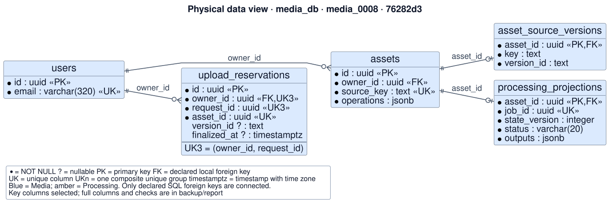
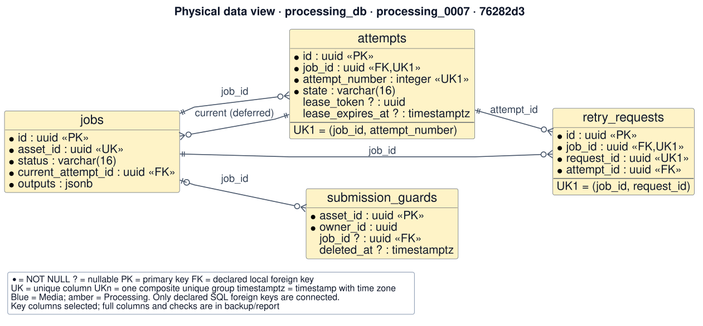
| Namespace | Key / descriptor | Authority |
|---|---|---|
| Direct upload | staging/{owner}/{reservation}/source | Adopted in place; UploadReservation pins the exact S3 VersionId. |
| Edit-derived source | sources/{owner}/{asset}/source | Verified parent primary copied to a new Asset; asset_source_versions stores its pin. |
| Primary output | jobs/{job}/attempts/{attempt_uuid}/ | Attempt UUID isolates writes. SQL finish fences publication. |
| HLS output | …/hls/master.m3u8 | Plain uploads only; master uploaded last. Only master is in the output descriptor list. |
Deleting an Asset triggers asynchronous deletion of object versions. Cleanup horizons bound rescans; they do not expire active videos.
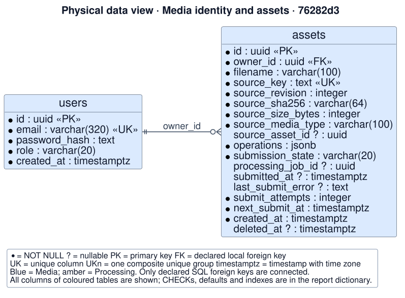
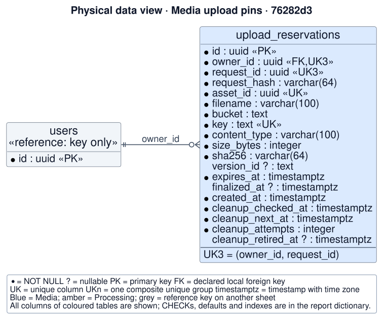
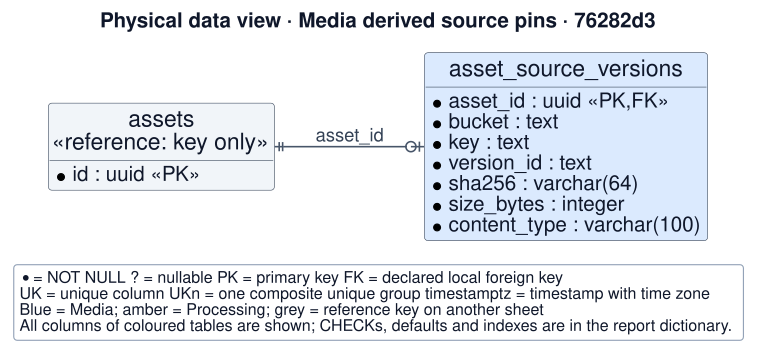
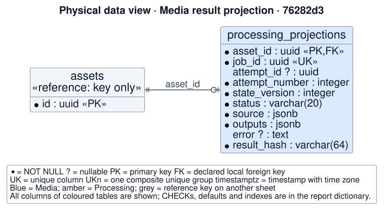
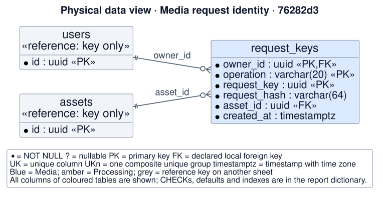
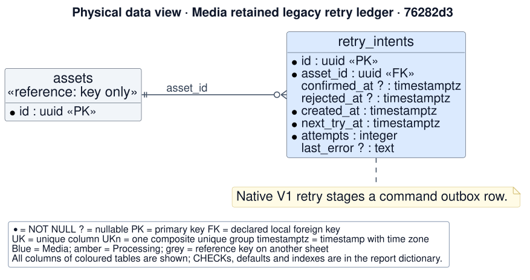
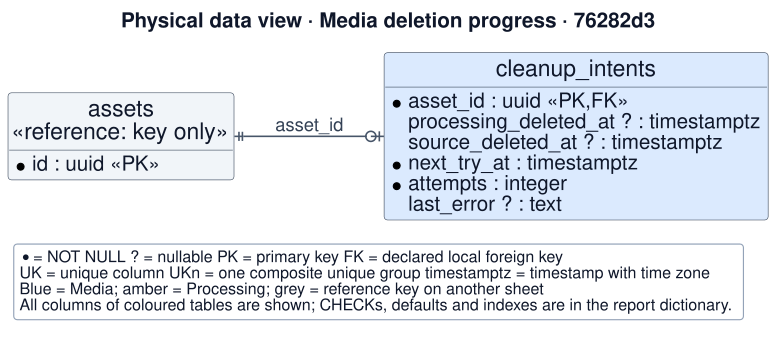
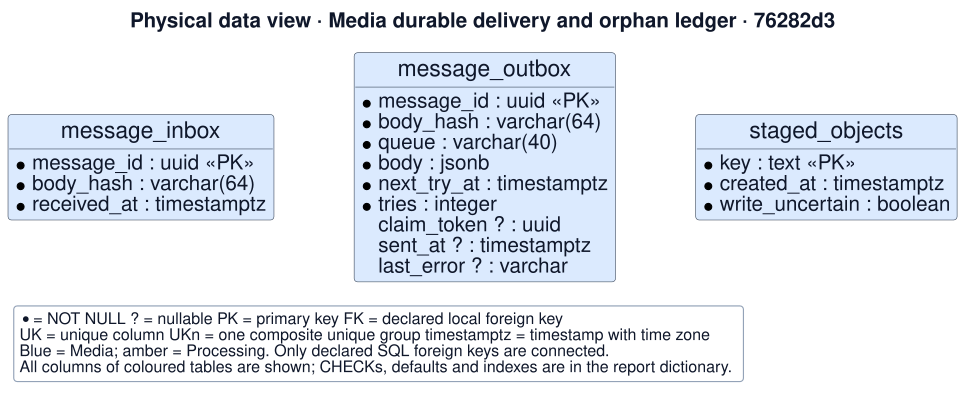
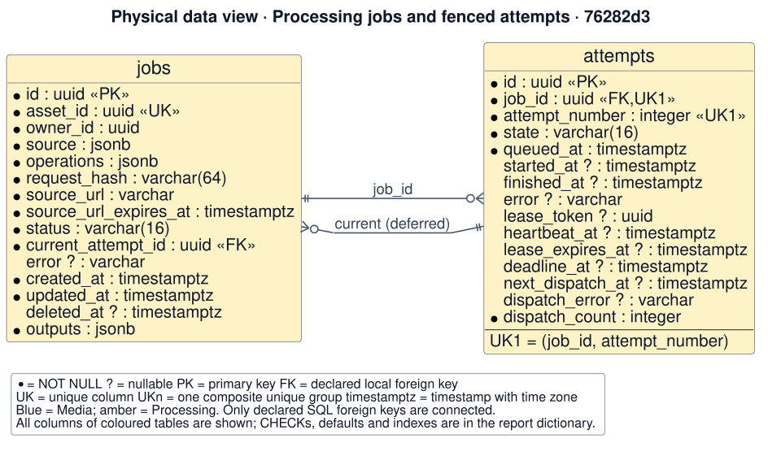
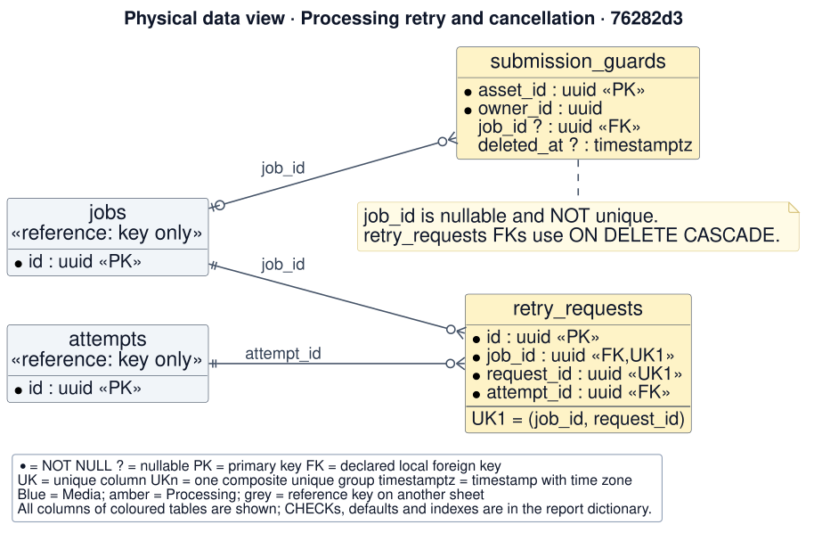
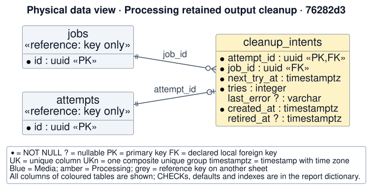
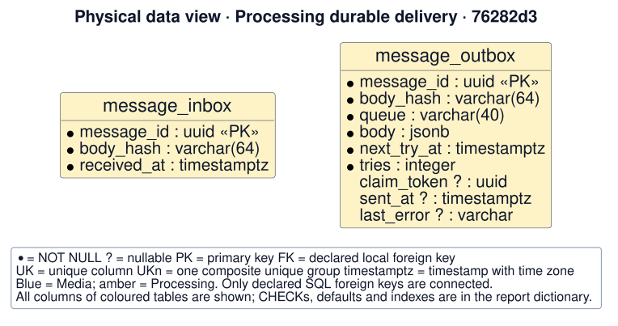
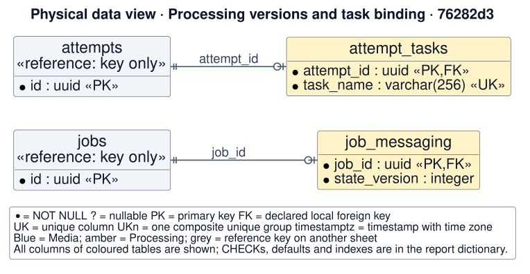
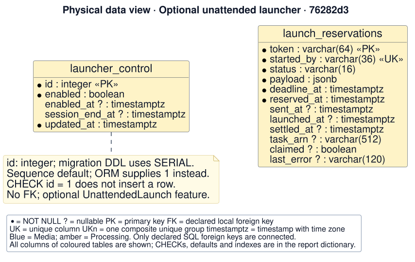
| Envelope field | JSON type / rule |
|---|---|
| schema_version | integer = 1 |
| message_id | UUID string |
| kind | submit | retry | cancel | work | result |
| owner_id | UUID string |
| asset_id | UUID string |
| Envelope field | JSON type / rule |
|---|---|
| job_id | UUID string | null |
| attempt_id | UUID string | null |
| state_version | strict integer ≥ 0 |
| source | Source object | null |
| payload | JSON object |
All keys must exist. A nullable value is JSON null, not an omitted field. The lane does not change the schema.
Source has six fields: bucket, key, version_id, sha256, size_bytes, content_type.
| Kind / lane | Produced shape and consumer semantics |
|---|---|
| submit → processing-commands | Source required; payload {operations:[Operation]}.Normal finalize: job_id=null, attempt_id=null, state_version=0. |
| retry → processing-commands | Stored Source emitted; payload {}; operations stay on Job.Consumer request identity: payload.request_id if present, else message_id. |
| cancel → processing-commands | Source null; payload {}; job/attempt may be null.SubmissionGuard makes cancel-before-submit durable. |
| work → processing-work or processing-work-short* | Job, Attempt and Source required; payload {operations:[Operation]}.Worker binds envelope to stored Job before reading S3. |
| result → media-results | Normal payload {status, outputs:[Output], error, attempt_number}.Job/Attempt/Source + monotonic version identify the result. |
*Optional short lane uses the same work schema. Each lane has its own DLQ; a DLQ stores the original message body.
kind: "result"
job_id: null, attempt_id: null, source: null
state_version: 0 // producer value
payload: {
"status": "cancelled",
"cancellation_confirmed": true,
"command_message_id": "<UUID of cancel command>"
}The payload has exactly these three keys. Media matches the command ID to its cancel outbox row before source cleanup.
| Value | Stored shape | Rules |
|---|---|---|
| Source | {bucket, key, version_id, | Nonempty strings; real VersionId; lowercase 64-hex hash. Strict integer size: 1…104,857,600 bytes. |
| Output | {kind, object_key, media_type, | kind: primary | hls_manifest. DTO permits null size/hash; Processing finish requires positive size/hash, unique kinds and exactly one primary. |
| Launch payload | {…RunTask request…} | Operational replay JSON, with stable ECS identity and finite worker overrides; not a video document. |
| Outbox body | Envelope canonical JSON | Canonical ordering → body_hash. Inbox keeps message identity + hash, not full body. |
Source VersionId is explicit. Output descriptors use an attempt UUID prefix and do not carry an output VersionId.
| Operation | params shape | Validation |
|---|---|---|
| clip | {start:number, end:number} | Finite numbers; start ≥ 0; end > start. |
| crop | {x:int, y:int, w:int, h:int} | Strict integers; x,y ≥ 0; w,h ≥ 1. |
| downscale / upscale | {height:int} | Strict positive integer. |
| convert | {format:"mkv" | "mp3"} | Enumerated target format. |
operations: [{operation, params}, …] — at most five; no repeated operation; no simultaneous upscale and downscale.
The worker probes the accepted source and validates bounds before FFmpeg. Browser metadata is not the authority.
| Store / owner | Schema / key | Consistency / retention |
|---|---|---|
| Frontend S3 / platform | index.html; stem.<hash10>.js/css;vendor/… | Versioned, private; index uploaded last. Cache policy differs from object retention. |
| SSM activity hints / service | /dc2/{env}/activity/{media|processing}/ | String epoch; quiet = "checked_epoch due_epoch". Missing/malformed hints cause full SQL pass. |
| SSM configuration / service | Owner-specific runtime/migration DSNs; Media JWT secret | Secret configuration, not user/domain records. Values omitted; no general TTL declared. |
| Store / owner | Schema / key | Consistency / retention |
|---|---|---|
| Secrets Manager / platform | Aurora-managed master password | Bootstrap credential, not an account store. Managed secret lifecycle. |
| CloudWatch Logs / service | Function/task log events | Diagnostics only; template retention 7 days. |
| Local JSON journals / operator | Deployment/session/release state | Outside product request path; operator files, no central expiry declared. |
| Access pattern | Current SQL guarantee | MongoDB / DynamoDB redesign |
|---|---|---|
| Own Asset + result by ID / owner list | Local Asset/projection join; version checks | Strong document/item fit; retain owner/deletion filtering, paging and conditional updates. |
| Message-driven state transition | One transaction: inbox + state + outbox | Mongo multi-document transaction or bounded embedded events; DynamoDB item transaction or CDC/outbox. |
| Retry / execution claims | Unique email / asset / task identities; Job lock; token + deadline fences checked with DB time | Preserve uniqueness reservations, current Attempt, conditional claims and an explicit clock policy. |
| Due work / cleanup / capacity | Due-time indexes; locked claims; singleton gate | Design due-time partitions/indexes and capacity gate; account for retries, conflicts and reconciliation. |
Decision: retain PostgreSQL authority; keep nested metadata in JSONB and media bytes in S3.
Revisit: measure read latency, volume and idle cost; trial an owner/asset read projection with reconciliation and deletion defined.